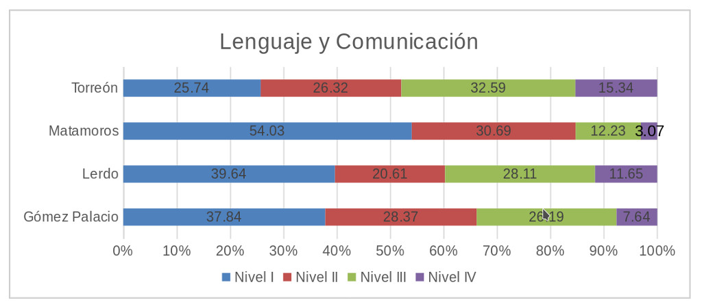
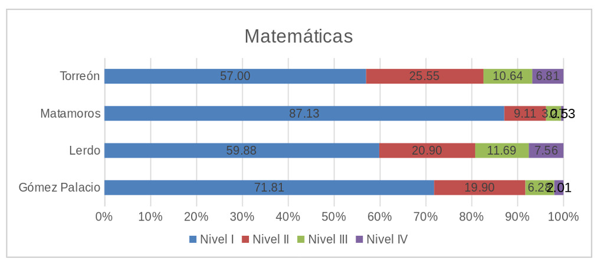

La prueba en Educación Media Superior del Plan Nacional para la Evaluación de los Aprendizajes (PLANEA), llevada a cabo por la SEP en coordinación con el Instituto Nacional para la Evaluación de la Educación, se aplicó a 585 mil alumnos en 16,380 escuelas a nivel nacional entre el 4 y 5 de abril.
Esta prueba forma parte de las diversas modalidades que se utilizan para evaluar el desempeño de los alumnos, en este caso los de nivel medio superior.
Para el área de la Zona Metropolitana de La Laguna (ZML) se realizó la prueba a 182 escuelas, de las cuales, por el lado de Coahuila 114 pertenecen a Torreón y 15 a Matamoros. En cuanto a Durango, 37 son de Gómez Palacio y 16 de Lerdo.
La prueba consta de 100 reactivos divididos en dos partes que evalúan las competencias del alumno en Lenguaje y Comunicación y la otra parte en Matemáticas.
Para llevarla cabo se dividió la evaluación en Centros Escolares (ELCE) y el Sistema Educativo Nacional (ELSEN); esta distinción obedece a la evaluación de diferentes aspectos de la educación en México, siendo ELSEN la utilizada para cubrir de manera representativa las escuelas del país y ELCE el resto de las escuelas. Ambas evaluaciones cuentan con el mismo número de reactivos.
Del total de alumnos matriculados en las escuelas consideradas para evaluación (14,100) en la región de la Zona Metropolitana de La Laguna, se consideraron para la muestra 7,667 y finalmente fueron evaluados 6,732 para la competencia de Lenguaje y Comunicación y 6,711 para Matemáticas.
Cabe destacar que los resultados no son comparables con otras pruebas anteriores, como lo son ENLACE y PLANEA Media Superior llevadas a cabo en 2015 y 2016 y su finalidad no es la de comparar centros educativos respecto a su desempeño o el de sus profesores, sino para evaluar el desempeño de los alumnos a nivel municipal, estatal y federal.
Los resultados se dividen en cuatro niveles y son acumulativos, lo que significa que la persona que se ubica en el nivel III, cuenta con los aprendizajes del nivel II y I.
Descripción básica de los niveles:
- I . Cuenta con conocimientos deficientes.
- II . Cuenta con conocimientos básicos.
- III. Cuenta con conocimientos suficientes.
- IV . Cuenta con conocimientos sobresalientes.
La muestra incluye escuelas de diferentes tipos de sostenimientos: Autónoma (2), Estatal (41), Federal (22) y Particular (117); así como hace la distinción entre niveles de marginación en: Medio (2), Bajo (15) y Muy Bajo (165).
DIFERENCIA ENTRE MUNICIPIOS
A nivel nacional en la competencia de Lenguaje y Comunicación, un tercio de los alumnos logran ubicarse en el nivel I, mientras que el 28% de los alumnos logran llegar al Nivel II y el 29% a nivel III. Sólo el 9.2% logró llegar al nivel IV.
Por parte de la competencia de Matemáticas, el 66% de los alumnos evaluados logró alcanzar el Nivel I, el 23.3 el nivel II. Sólo 8 alumnos de 100 alcanzan un nivel suficiente y el 2.5% un nivel sobresaliente.
A nivel estatal, Coahuila se ubica por encima del promedio a nivel nacional tanto en Lenguaje y Comunicación como en Matemáticas, con 9 de cada 100 alumnos en el nivel IV para la competencia del Lenguaje y Comunicación y con 4 de cada 100 en el mismo nivel para Matemáticas.
En el caso de Durango, en ambas competencias se encuentra por debajo del promedio nacional, con 8.3 y 2.3 por ciento de los estudiantes que lograron el nivel IV. Para el caso específico de La Laguna, existe una gran diferencia entre los resultados de Torreón y Matamoros para ambas competencias, mientras que los resultados de Gómez Palacio y Lerdo son más homogéneos.
En Lenguaje y Comunicación, Torreón cuenta con un cuarto de la muestra en el nivel I, de manera similar el nivel II con 26%. Muy por encima del promedio nacional y estatal, para el nivel III y IV Torreón cuenta con 32% de la muestra alcanzando un nivel satisfactorio y 15% un nivel sobresaliente.
De manera contrastante, Matamoros cuenta con un poco más de la mitad de los estudiantes evaluados alcanzando el nivel I, el 30% el nivel II pero por debajo del promedio el nivel III y IV con 3 de cada 100 alumnos alcanzando este último.
Los municipios de la Laguna de Durango, tienen resultados más similares entre sí en las pruebas. Con un tercio de la población alcanzando el primer nivel de logro y, por encima de la media nacional, alcanzando el nivel IV Lerdo cuenta con 11 de cada 100 alumnos y Durango con 7 de cada 100.
En cuanto a la parte de Matemáticas, los resultados son similares entre Torreón, Gómez Palacio y Lerdo con más de la mitad de los alumnos evaluados logrando el Nivel I y aproximadamente un cuarto logrando el nivel básico. Lerdo cuenta con la mayor proporción de alumnos en niveles suficientes (11.69) y sobresalientes (7.56) de los municipios de la ZML.
Matamoros muestra resultados contrastantes con el resto de los municipios, con un 87.13% de alumnos logrando el nivel I, en promedio 9 de cada 100 alumnos logrando un nivel básico de la prueba. Con un nivel satisfactorio se encuentra poco más del 3 por ciento y menos del 1%, solo 5 alumnos de 570 evaluados, en esta ciudad lograron un nivel sobresaliente.
Con base en estos resultados se conoce de forma más puntual el dominio que tienen los estudiantes de los aprendizajes esenciales que se establecen en los programas educativos, así como establecer los parámetros por los cuales se puedan reforzar los procesos de enseñanza y aportar información para la planeación y operación del sistema educativo.
Total de alumnos evaluados por prueba
| Ciudad | Lenguaje y Comunicación | Matemáticas |
|---|---|---|
| Gómez Palacio | 1647 | 1663 |
| Lerdo | 828 | 843 |
| Matamoros | 587 | 570 |
| Torreón | 3670 | 3635 |
| TOTAL | 6732 | 6711 |
Porcentaje de Alumnos por Nivel de Logro: Lenguaje y Comunicación

Porcentaje de Alumnos por Nivel de Logro: Matemáticas

Fuente: Base de datos PLANEA 2017